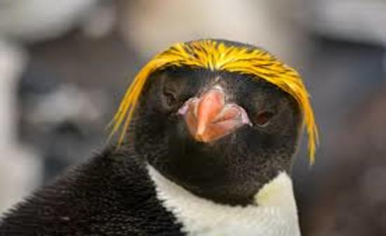
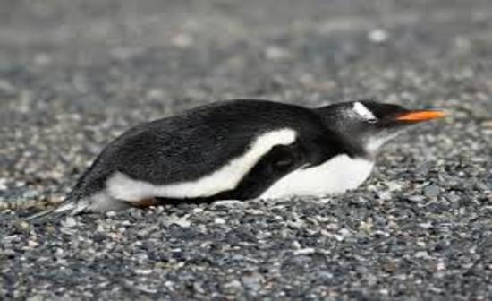
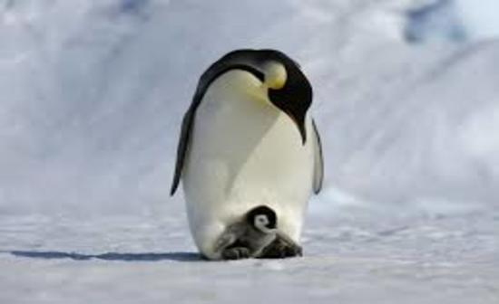
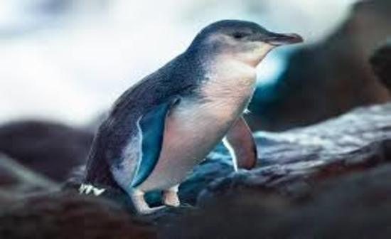
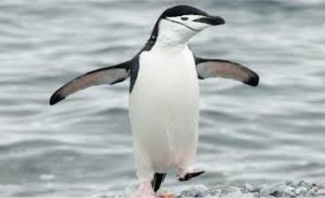

Top 5 Penguin Species
At #5 is the Macaroni Penguin. Named for their orange plume feathers, these shallow-nesting hoppers are the largest of the crested penguins. Macaroni penguins are the most numerous species of penguin, estimated at nine million pairs. Some populations, however, have witnessed at least a 50% decline in the last four decades, most likely due to warming seas and pollution. Macaroni penguins on the hunt dive anywhere from 15 to 70 metres (49 to 229 feet) but have been recorded as going as deep as 100 metres (330 feet). The dives last somewhere around two minutes. Macaroni penguins usually swim at about 15 kph (9.3 mph) but can burst up to 24 kph (15 mph).

Placing #4 is the Gentoo Penguin. Gentoo penguins are native to sub-Antarctic islands where chilly temperatures allow for ideal breeding, foraging and nesting conditions. Despite living in cold climates, gentoo penguins typically live in ice-free areas like flat, rocky beaches and low-lying cliffs where large colonies of individuals can gather. Like other penguin species, gentoo penguins rely on the ocean for food and are never far from the water. These penguins take advantage of stream-lined bodies and strong “flippers” in the water to dive more than 600 feet deep and swim up to 22 miles an hour, the fastest of any other diving bird.

The Emperor Penguin, the tallest and heaviest of all living penguin species, comes at #3. On average, these birds stand at 45 inches tall. Emperor penguins spend the long winter on the open ice—and even breed during this harsh season. Females lay a single egg and then promptly leave it behind. They undertake an extended hunting trip that lasts some two months. Depending on the extent of the ice pack, females may need to travel some 50 miles just to reach the open ocean, where they will feed on fish, squid, and krill. At sea, emperor penguins can dive to 1,850 feet and stay under for more than 20 minutes.

Coming in at #2 is the Little Penguin, the smallest of all penguin species. They stand approximiately 33cm tall and weigh around one kilogram. Adult little penguins are the only penguins in the world with blue and white feathers instead of black and white feathers. They are 'countershaded', the dark blue back of penguins blends in with the water to camouflage against any predators flying or swimming overhead, and the light stomach blends in with the sky to camouflage against any predators swimming underneath. The Little Penguin is the only species of penguin that breeds in Australia.

#1 is the Chinstrap Penguin, a species of penguin that inhabits a variety of islands and shores in the Southern Pacific and the Antarctic Oceans. Its name stems from the narrow black band under its head, making it appear as if it were wearing a helmet. Chinstrap penguins are the most abundant penguin in the Antarctic, where they gather in massive breeding colonies. The largest colony, on the uninhabited South Sandwich island of Zavodovski, hosts some 1.2 million breeding pairs. Baily Head in the South Shetland Islands is home to more than 100,000 pairs.
